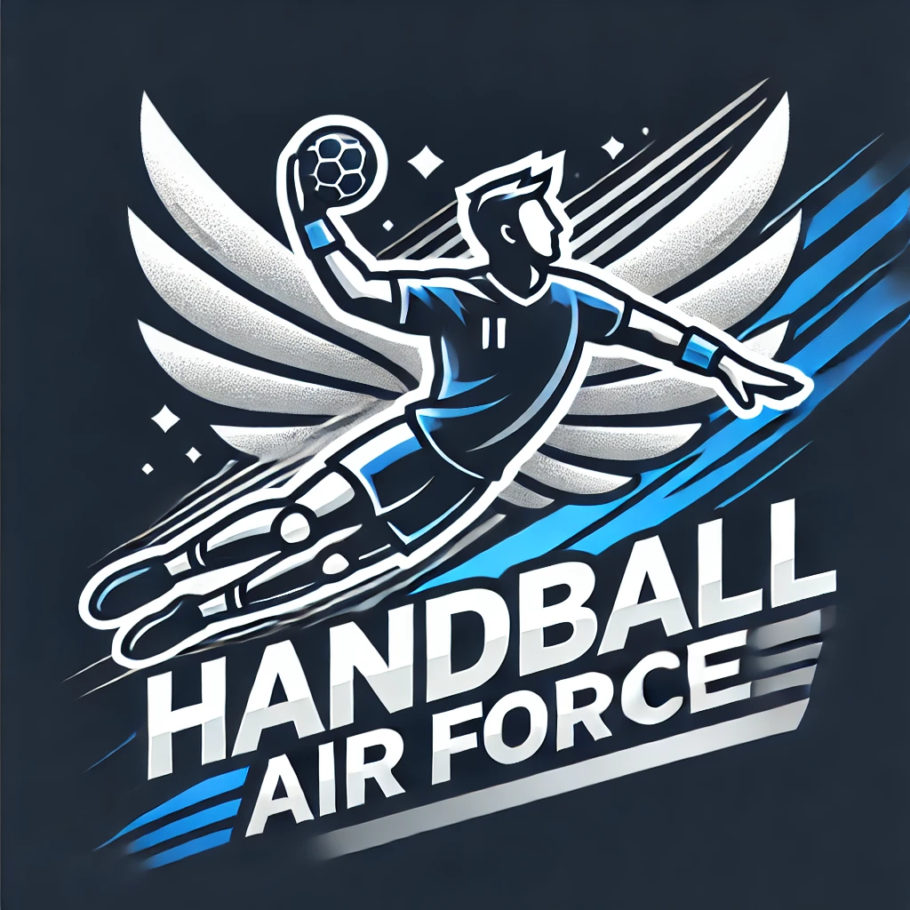

À Propos de Nous
Qui sommes nous
Bienvenue chez Handball Air Force, un acteur majeur dans le domaine de du handball. Nous nous engageons à developper notre site le plus possible pour qu'il devienne le leadder du marché qui est peu développer. Souhaitez vous rejoindre l'aventure ?
Notre Mission
Notre mission est de répondre a vos attentes concernant le handball et de faire développer le handball tout en garantissant une qualité optimale et en respectant les valeurs fondamentales de ce sport
- Respect
- Qualité du développement
- Engagement envers vous
Notre Équipe
Nous sommes une équipe passionnée débutante dédiés à faire connaitre le handball
Dirigée par SCHER Florian, notre équipe combine expérience et créativité pour atteindre nos objectifs.
Florian SCHER
Bonjour je me présente Florian SCHER développeur du site Handball Air Force, je suis passionnée de handball depuis l'âge de 5 ans, une passion qui n'a cessé de grandir au fil des années. J'ai eu l'opportunité de jouer en section sportive au collège pendant deux ans, ce qui m'a permis de progresser et de vivre des moments inoubliables, notamment en remportant le titre de champions de France. Depuis toute petite, je joue au sein de l'AS Giberville Handball, un club qui m'a vu évoluer et grandir. Avec mon équipe, nous avons remporté plusieurs titres, dont celui de vice-champions de Normandie en 2024, une grande fierté et un aboutissement de notre travail collectif. Le handball est bien plus qu'un sport pour moi, c'est une véritable passion qui m'apporte discipline, esprit d'équipe et dépassement de soi.
bQuelque moment culte de mes saisons
- Ma première dans les buts fasse au premier du championnat. A 20 min de la fin du match notre unique gardien ce jour sors sur blessure, je prends la responsabillité d'y aller bilan je sors une grosse performance
- Premier tournoi de beach handball on finit 4 eme et je suis élue meilleur gardien de la comptétion. On bats les selections de l'orne et de seine maritime de beach handball
- Le post de la ligue pour la première finale de coupe de normandie du club
 Les trois equipes
séniors montent de division, la premiere triple monté du club
Les trois equipes
séniors montent de division, la premiere triple monté du club
- La premiere coupe au niveau régionnal du club